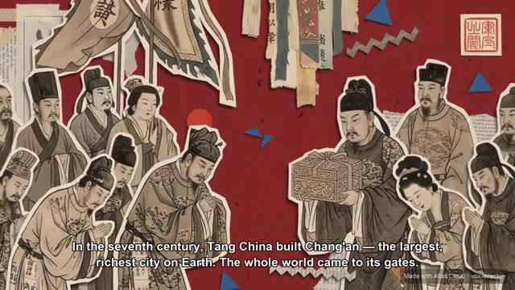

Hand-Drawn Video Prompts
Prompt 编译器
输出分镜、双 Prompt 与风险提示。
交付点把制作说明交给人或外部工具
FIXED UPSTREAM · 668EC39 · 2026-08-11
它不是视频模型，也不只写 Prompt。它让 Agent 担任导演，把生成模型、人工审批和 ffmpeg 串成一条成片流水线。

真实上游样例
不是本页模拟生成
THE SIMPLE DIFFERENCE
这是理解它与 Hand-Drawn Video Prompts 差异的最短路径。
Prompt 编译器
输出分镜、双 Prompt 与风险提示。
导演 + 生成编排 + 后期
继续生成关键帧、视频、声音和 final.mp4。
CAPABILITY CONSOLE
切换 B、A、C-roll，观察输入、阶段、产出和证据边界如何变化。
BUNDLED EVIDENCE
四支 MP4 随固定提交保存；墨西哥美食只保留缩略图，因此明确标为“不能计作仓库内视频”。
仓库随附视频
MODEL-NEUTRAL PREPRODUCTION
从 4 份上游 beats 样例中选一个结构，或直接载入完整的“敦煌”示范；逐镜头修改旁白、画面和运动提示，再交给你已有的图片或视频模型。
这是模型无关的交接协议。你的执行器只需把每个 shot 的 model_task 映射到自己的 API 参数。
scripts/build_demo.py。REPOSITORY AUDIT
这里统计固定提交本身，不把 README 的宣传语当作测试结论。
图片、视频、音频任务都经过 Provider；beats.json 在每一阶段保存 URL、路径、时长和 Prompt。
仓库有样例和“实测”注释，但没有测试目录、CI、OCR、口型或跨帧一致性指标。
本机具备 Python、Pillow 与 ffmpeg，但缺 API Key；脚本还硬编码了 /usr/bin/curl。
FIT / NOT FIT
风格统一并不等于事实准确；能自动出片也不等于可以无人审核。
EXTENSION ROADMAP
对我们的最佳改造顺序不是继续堆视觉主题，而是先让结果可验证、可追溯、可恢复。
WHAT IT MEANS TO US
下一轮最有价值的实验，是让它与 Hand-Drawn Video Prompts 使用同一段口播，比较完整度、生成成本、文字准确率、失败率和最终可控性。
基础说明仍然可读。请确认 assets/research-data.json 已由构建脚本同步，然后刷新页面。